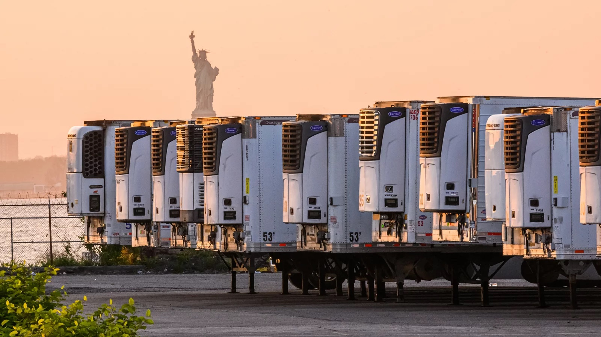
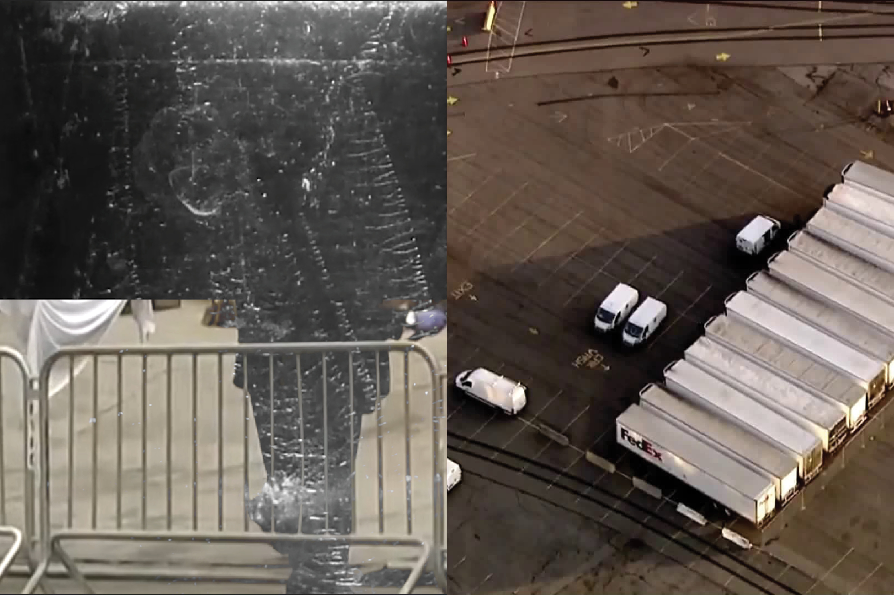

Tempo 3. Largo. Physical and social body.
–
Scene 1: Health, safety, and welfare of the physical and social body
–
The health, safety, and welfare of the physical and social body is requires maintenance at every stage of life, even after death.
Children are contending with overwhelming death due to the pandemic.
–
Scene 2: Maintenance infrastructure
–
"What does it mean to defend the dead?" asks Christina Sharpe.
....It means work. It is work: hard emotional, physical, and intellectual work that demands vigilant attendance to the needs of the dying...and also to the needs of the living....How might we stay in the wake with...those whom the state positions to die ungrievable deaths and live lives meant to be unlivable?"
Christina Sharpe, In the Wake

COVID-19 has had an outsized impact in Sunset Park, revealing systemic injustice.
The South Brooklyn Marine Terminal was used in 2020 as a site for a disaster morgue, where bodies were preserved in refrigerated trucks until morgues had the capacity to attend to them. This may preserve the physical body, but the social body remains, as Sharpe clearly revealed, "ungrievable." They were lives treated as already dead, while at the same time so many in this community were labeled "essential."

"These are questions of temporality, the longue durée," Sharpe continues.
"At stake, then, is to stay in this wake time toward inhabiting a blackened consciousness that would rupture the structural silences...that produce and facilitate Black social and physical death."
This "social and physical death" echos into many communities, such as those of Puerto Rican and Chinese Americans in Sunset Park, whose bodies are being violated by the failure of white supremacy, American exceptionalism, and capitalism to do the work of health, safety and welfare.
How can we cultivate care, as in Tempo 2, for the dead as well as the living?
–
Scene 3: Cultivate Care
–
We suggest that it is through active memorializing—not in a way that preserves and thus contains—but in a way that nourishes growth, imagination, and productive landscapes while attending to memory.
In short, we can cultivate care through process.
We imagine a disruption in the water at the South Brooklyn Marine Terminal. Returning to Christina Sharpe: "Wakes allow those among the living to mourn the passing of the dead through ritual...But wakes are also "the trace left on the water’s surface by a ship the disturbance caused by a body...in water."
Water passes over metal plates. In winter, it is shallow enough to freeze, in thin layers. Sunlight reflects off the new surface—too bright to be surveilled from the vantage of a car driving along the BQE. In summer, the plates become trays for existing community land trusts to practice agroecological farming.

This is a project that memorializes through unearthing the physical and social body while carefully attending to imagination and growth.